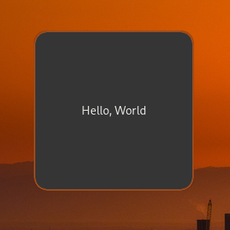
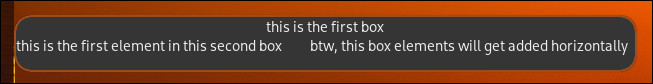
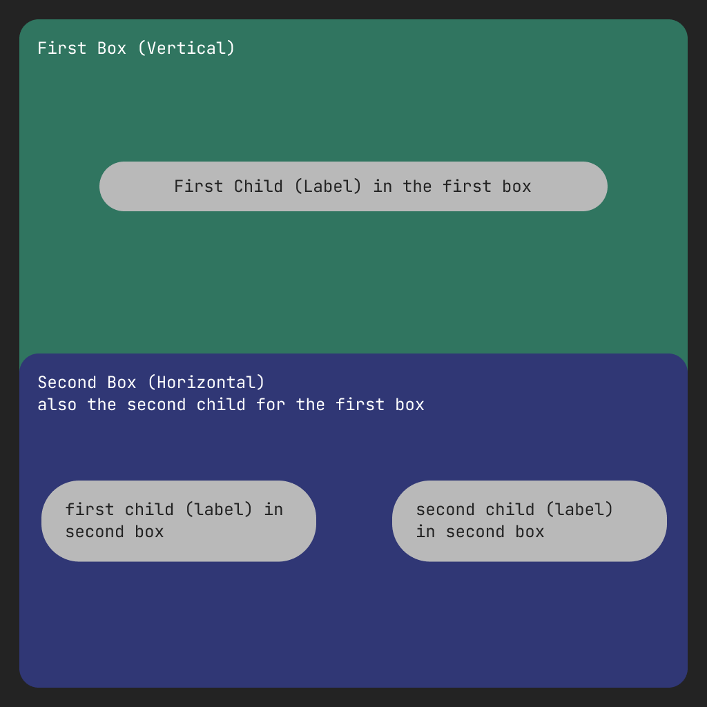
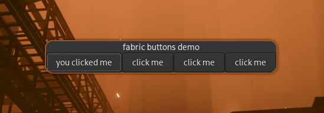

Creating Your First Widget!
now (assuming you have Fabric installed) we can write our first widget
Coding the Basics...
here's an example of using Fabric to define a simple widget, you can create a new python file and add this code into it, don't worry, you don't have to understand anything since we'll walk you through every line
import fabric # importing the base pacakge
from fabric.widgets.window import Window # graps a Window object from fabric
from fabric.widgets.label import Label # gets a Label object
window = Window() # creates a new instance of the Window object and assign it to the `window` variable
label = Label("Hello, World") # creates a new Label instance and give it to the `label` variable, this label is set to "Hello, World"
window.add(label) # adds the label to the window
window.show_all() # to make the window and it's children appear up
fabric.start() # to start fabric
run the code using python path/to/your/config.py
if everything goes fine, you should see a window that looks like this: 
if you didn't already understood the code, it firstly imports Fabric and the used widgets to create this demo which's a Window and a Label, then it creates a new instance of each widget, for the label instance it get's created with the text "Hello, World", then it adds this label widget to the window and show's up that window (and all of it's children), lastly it starts Fabric so the window actually shows up
"now what?" you might be asking; "now, we do some REAL STUFF" i answer.
Level 1: Boxes
in this level, we're going to start very simple by using some boxes and labels..
import fabric # importing the base pacakge
from fabric.widgets.window import Window # graps a Window object from fabric
from fabric.widgets.box import Box # gets a Box object
from fabric.widgets.label import Label # gets a Label object
box_1 = Box(
orientation="v",
children=Label("this is the first box")
)
box_2 = Box(
orientation="h",
spacing=28, # adds some spacing between the children
children=[
Label("this is the first element in this second box"),
Label("btw, this box elements will get added horizontally")
]
)
box_1.add(box_2)
window = Window(
children=box_1 # there's no need showing up this window using `show_all()` it'll show itself because the children is already passed
)
fabric.start()
result (notice the alignment of the labels)

see this visual representation so you understand what's going on more clearly

now you probably got an idea about how box containers work with different orientations, we can follow up now
Level 2: Buttons
without any further ado, let's see how the code will look like first...
import fabric
from fabric.widgets.box import Box
from fabric.widgets.label import Label
from fabric.widgets.button import Button
from fabric.widgets.window import Window
def create_button():
button = Button(label="click me")
button.connect("button-press-event", lambda *args: button.set_label("you clicked me"))
return button
box = Box(
orientation="v",
children=[
Label("fabric buttons demo"),
Box(
orientation="h",
children=[
create_button(),
create_button(),
create_button(),
create_button(),
],
),
],
)
window = Window(
children=box,
)
fabric.start()
result:

this demo creates a window with a box inside of it, lets call it "first box", this first box orientation is set to be vertical, first child inside that box is a label with the text "fabric buttons demo", second child inside the first box is another box oriented horizontally, lets call it the "second box" , this second box has 4 buttons, each button is automatically generated using a function to handle creating buttons and connecting each buttons signal for us, since each widget can't be used more than one time as a child for a widget we made this function (create_button), it creates a new instance of a Fabric button and connects its button-press-event signal to a lambda function that basically changes the label of the same button to "you clicked me" when it gets clicked by the user
[!TIP] when you write a widget using Fabric, you're actually creating a genuine GTK widget under the hood Fabric's purpose is to simplify and add an enjoyable touch to the widget-writing process as we delve into widget creation, we might, for instance, nest a button within a box or embed text inside a button. this approach to defining widgets will feel remarkably familiar to frontend developers and those who have experience writing HTML